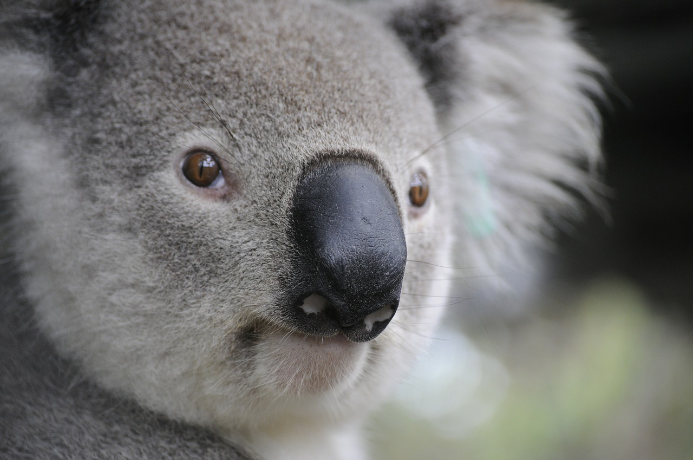

DESCRIPTION:
Koalas have soft, wool-like fur that is gray above and white below. Their fur is mostly
white on the underside below the neck, and their ears have long white hairs on the tips.
The koala resembles a bear, but is actually a marsupial, a special kind of mammal which
carries its young in a pouch.
SIZE:
Koalas are rather small, round animals. They weigh about 30 pounds and on average grow to
be 2 feet tall.
POPULATION:
There are fewer than 100,000 koalas.
LIFESPAN:
Koalas can live as long as 17 years, although high mortality rates (due to car fatalities and dogs)
for males lower their life expectancy to 2 to 10 years.
RANGE:
The koala's historic range stretches across Australia. Today they can be found only
in Queensland, New South Wales, Victoria, and South Australia.
HABITAT:
Koalas prefer to live in eucalyptus forests, coastal islands, and low woodlands.
FOOD:
Koalas consume eucalyptus leaves and bark from 12 different eucalyptus tree species.
They also consume mistletoe and box leaves. Koalas consume eucalyptus leaves and bark
from 12 different eucalyptus tree species. They also consume mistletoe and box leaves.
BEHAVIOR:
Nocturnal mammals, koalas sleep for up to 16 hours a day. They are arboreal, which
means that they live in trees. They do not live in big groups but rather prefer to be alone.
OFFSPRING:
Koalas breed once a year. Gestation lasts 35 days, after which one koala is born. The
baby koala is very small when it is born, and lives in its mother's pouch for five to
seven months. After this time, koalas gradually become independent and survive on their own.
THREATS:
Once numbering in the millions, koalas suffered major declines in population during the
1920s when they were hunted for their fur. Today, habitat destruction, traffic deaths, and
attacks by dogs kill an estimated 4,000 koalas yearly.
PROTECTION:
Australian national laws protect koalas, but each individual state is responsible
for the animal's conservation.